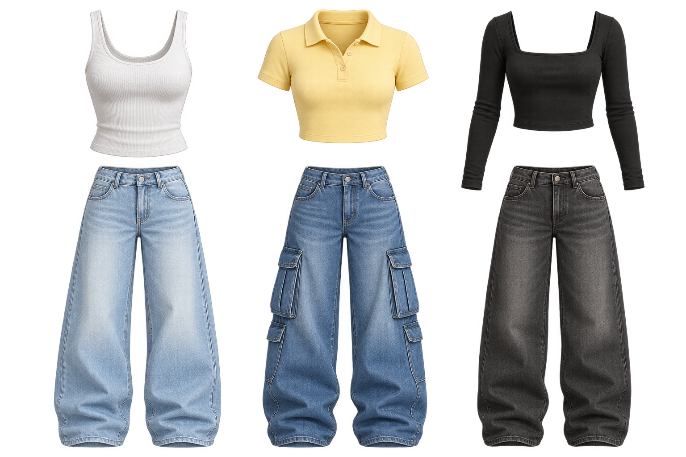
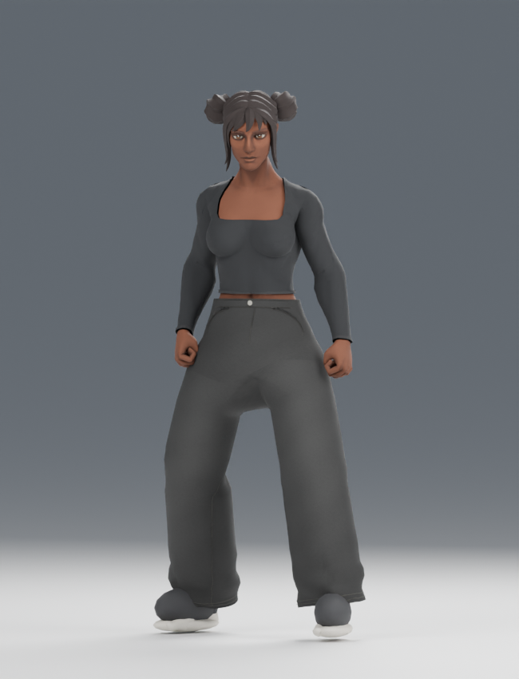
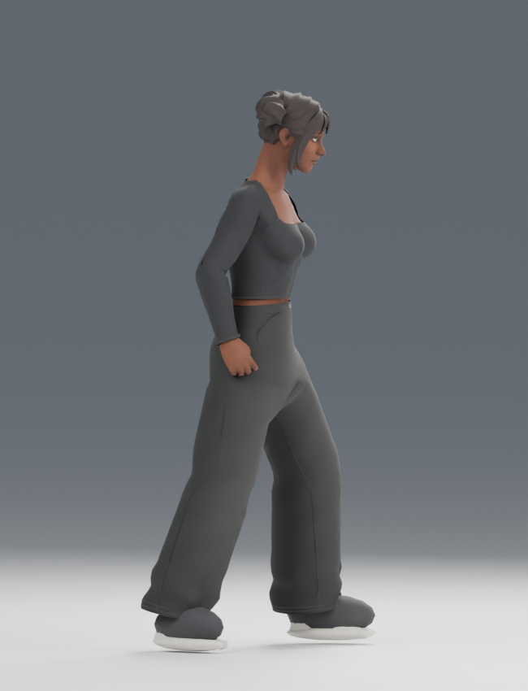
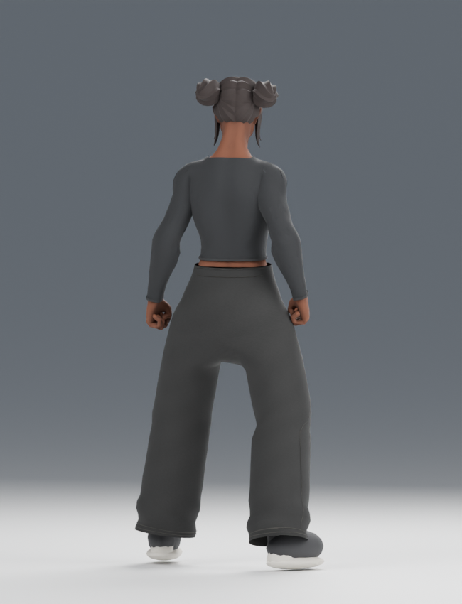
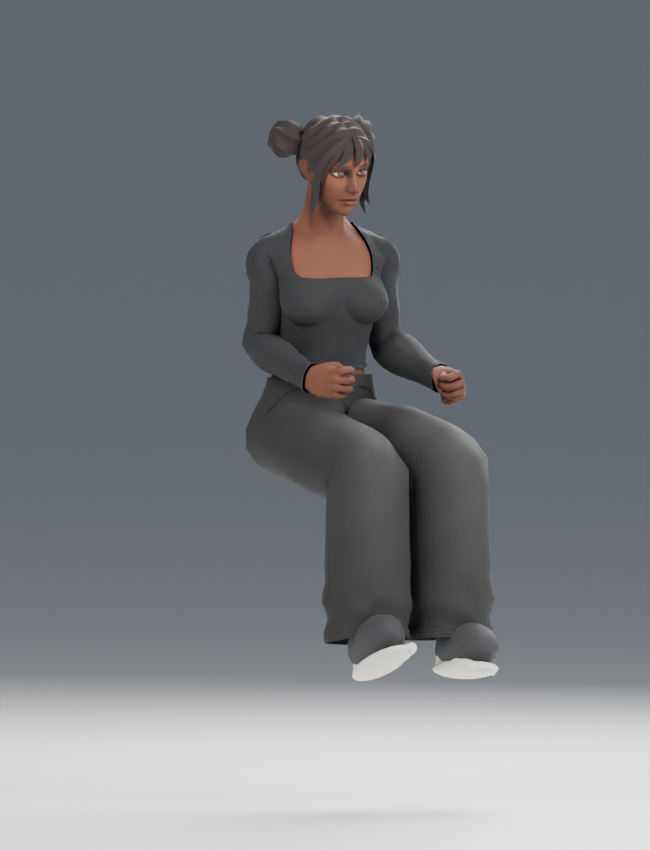
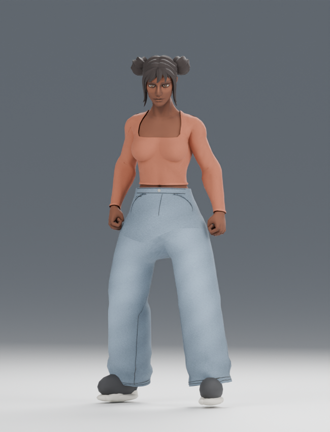

One outfit · exported Blender asset
Selected reference: the rightmost charcoal square-neck crop and washed-black wide-leg jeans. The pictures below are Blender renders of the exported asset on the game character in game-generated poses. They are not game screenshots. The plain back is inferred. Visual review remains open.
Open the actual game review · Editable Blender source · Editing and export instructions

Original reference · select the rightmost outfitOriginal design sheet, unchanged.
FrontExported garment, retained game character and idle pose.
SideBlender studio lighting.
Back · inferredPlain matching construction; no supplied back design.
SeatedExisting game pose. No cloth simulation or corrective shape.
Recolour demonstration · same outfitIndependent top and denim dyes, not an additional design.The game review has separate top and jeans colour controls and a source-plus-four-view WebGL download. Main-story saves, ownership and original designs are preserved. No normal-play replacement or additional outfits.